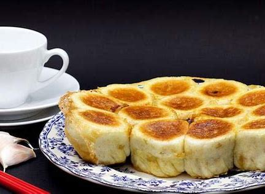

舌尖上的非遗：“水煮油煎”沿袭百年 利津水煎包香飘凤凰城
发布时间: 2023-04-07 4859 次浏览
-
文化兴国运兴，文化强民族强。非物质文化遗产作为中华优秀传统文化的重要组成部分，是我国各族人民宝贵的精神财富，具有重要的历史价值和现实意义。文脉颂中华，大众网·海报新闻今起推出“齐鲁青未了”系列短视频报道，集中展现山东省内非物质文化遗产活态传承、资源开发、长效保护等内容，推动中华优秀传统文化创造性转化、创新性发展。
利津是东营的古县城之一，始建于金代，至今已有800余年历史。因利津古城的整体轮廓恰似一只凤凰，昔时又被冠以凤凰城的美名。凤凰城紧邻黄河，自古人杰地灵，物产丰富，地方名吃繁多。其中，最有代表性的当属山东省级非物质文化遗产——利津水煎包。
1916年，刘明远、刘凤岗父子在利津县城开了第一家水煎包专营小店“茂盛馆”。“早先的煎包是死面的，和如今的锅贴、煎饺没什么很大区别。一次偶然，我老姥爷在开店的时候，不小心把加了面汤的水浇到了锅里，开锅一看，没想到包子连成一片金黄，好看又好吃，这也是水煎包的由来。”利津水煎包第四代传承人王强说道，经过不断改良制作工艺，做出的水煎包色香味俱佳，扬名利津，以至于当时有这样一句顺口溜广为流传，“刘凤岗开了张，别处的水煎包不吃香。”
记者走进至茂盛馆厨房，一阵香而不腻的油煎气就扑面而来。原始的农家灶台立在墙角，灶眼里上好的松木经受烈火炙烤，包子中也自带了草木香气。手脚麻利的工人将新鲜时令蔬菜细细切碎，起手间只见刀影清脆声响彻厨房。水煎包与其他面食不同，馅料分成荤素两波，切好的蔬菜绝不用油、盐等调料搅拌，水煎包的“灵魂”全来自腌制的肉馅。
“我们的肉馅绝对不用十三香等香料调味，全部用大骨头、老母鸡、肉皮加进中草药熬制入味，再拌进肉馅里。”王强介绍，茂盛馆水煎包全部用百年来传下的老手艺，就连最普通的面粉也不用泡打粉，全部用“老面”发酵，这种方法做出来的面食质地细腻，香醇可口。
从难登大雅之堂的农家餐桌，走向城市的餐馆和酒店，街头巷尾有着无数经营水煎包的店铺、摊点。一个切菜板，一个原始的农家灶台，几样简单的时令蔬菜，现场烙制，简简单单的营生，成为东营街头一道风景。
黄河文化旅游宣传平台
联系电话: 17753010787
版权所有：山东大学技术团队
技术支持：山东大学技术团队